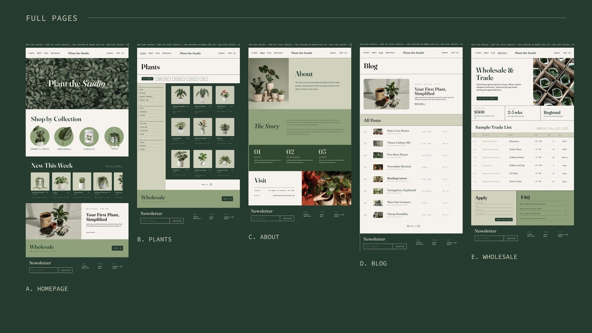
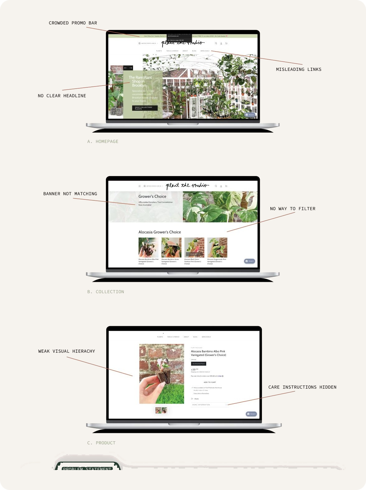
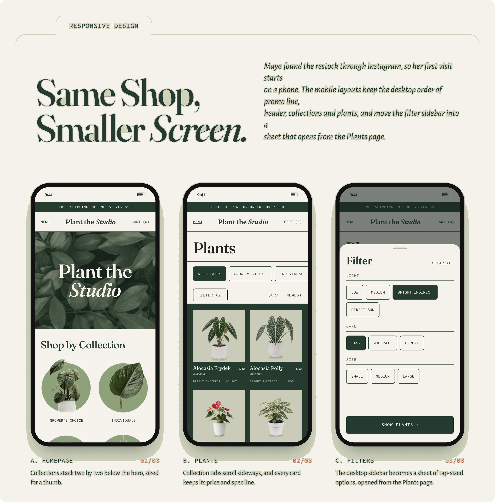
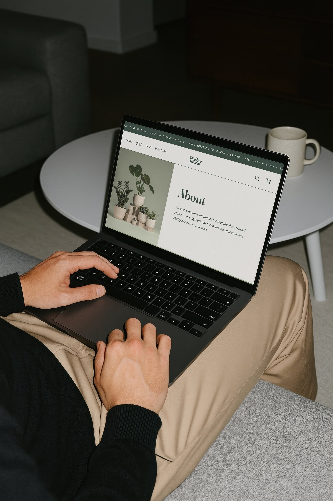

Plant the Studio Website Redesign

An e-commerce UX/UI redesign exploring how clearer information architecture, more intuitive product discovery, and a plant-centered visual hierarchy can improve the online shopping experience.
- Role
- Solo UX/UI designer
- Tools
- Figma
- Platform
- Responsive web
Plant the Studio is an e-commerce redesign focused on making plant discovery more intuitive through clearer information and botanical visual storytelling
An e-commerce UX/UI redesign exploring how clearer information architecture, more intuitive product discovery, and a plant-centered visual hierarchy can improve the online shopping experience.
- User personas and journey map
- Sitemap and pain points
- Low-fidelity wireframes for five pages
- Style guide
- High-fidelity designs for five pages
- Responsive mobile layouts
- Interactive prototype
Where the current site creates friction
The existing storefront presented an opportunity to improve the relationship between navigation, product organization, and product information.

Low-fi first
Before developing the visual identity, I mapped out the core pages and user flows to establish a clear, intuitive browsing experience. The low-fidelity wireframes helped define the information hierarchy, navigation, and relationships between key sections before moving into high-fidelity design.

Plants before promotions. The old homepage opened on promo bars and a photo carousel. The redesign follows a single hero with four collections and a New This Week row, and every card shows its name, price, light and pot size. A visitor arriving from a restock post sees what's new within one scroll.
One Plants page, in everyday words. The old Plants menu split into insider labels like "TC" and "See What You're Buying." The redesign gathers the collections into tabs on one Plants page, renames tissue culture to Plantlets, and adds a sidebar that filters by light, care, type and size.
Size and care on every card. Product details used to sit under "More information." Each card now carries a spec line, such as BRIGHT INDIRECT · 6" POT · EXPERT, beneath the common name, genus and price, so shoppers can compare plants without opening each one.
One sign-up, in one place. Three sign-up prompts and a floating reward button compete for attention on every visit.



